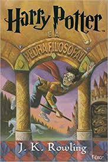

Catálogo (vitória)
 O pequeno principe
O Pequeno Príncipe conta a história de um aviador que cai em meio à imensidão do Deserto do Saara e conhece, inesperadamente, um menino de cabelos dourados como trigo, vestido com um manto verde e vermelho e portando uma pequena espada.
R$ 28,99
 Harry Potter e o Enigma do príncipe
Harry Potter e o Enigma do príncipe
Harry, que acabou de completar 16 anos, parte rumo ao sexto ano na Escola de Magia e Bruxaria de Hogwarts, animado e ao mesmo tempo apreensivo com a perspectiva de ter aulas particulares com o professor Dumbledore, o diretor da escola e o bruxo mais respeitado em toda comunidade mágica.
R$ 23,68
 Alma Ferida, Alma Curada.
Alma Ferida, Alma Curada.
LIVRO ALMA FERIDA, ALMA CURADA PADRE REGINALDO MANZOTTI Sente que perdeu o sentido da vida, sofre com uma realidade familiar e conjugal conturbada, padece de traumas emocionais ou sente-se abandonado e culpado, não perca as esperanças.
R$ 31,90